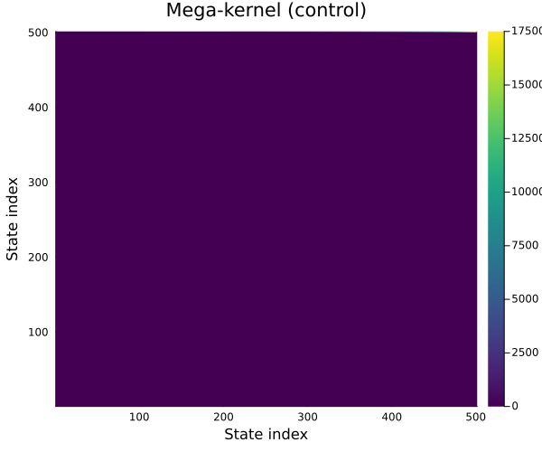
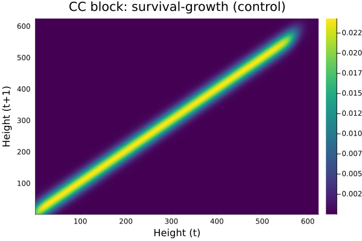
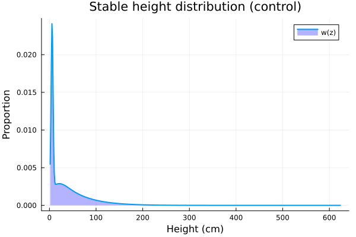
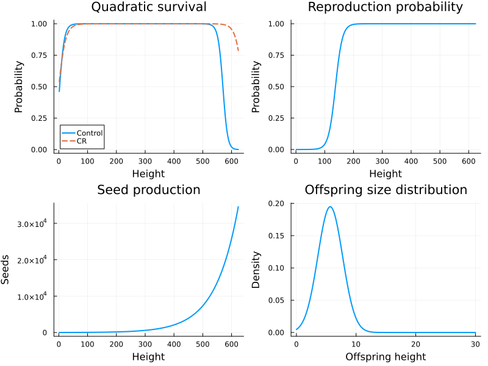
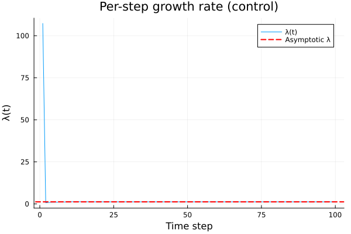
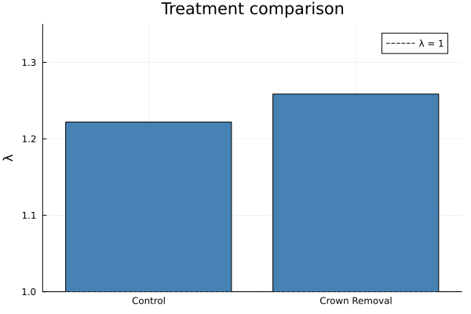

General IPM with Seed Bank
Overview
A general IPM models populations with multiple state variables — both continuous (e.g., size) and discrete (e.g., seed bank, dormancy stage). The kernel becomes a block-structured mega-kernel with transitions between all state combinations.
This vignette models Ligustrum obtusifolium (border privet) with a discrete seed bank and continuous height, following Levin et al. (2019). We compare two treatments: control and crown removal (CR).
Setup
using IntegralProjectionModels
using Distributions
using LinearAlgebra
using PlotsThe Ligustrum Model
The population has two states:
- Height (
ht): continuous, measured in cm — domain $[1.02, 624]$ - Seed bank (
b): discrete, a single pool of seeds in the soil
The mega-kernel has four blocks:
$
K = \begin{pmatrix} K{CC} & K{DC} \ K{CD} & K{DD} \end{pmatrix} $
where:
\[K_{CC}\]
(continuous → continuous): survival-growth (P kernel)\[K_{CD}\]
(continuous → discrete): seeds entering the seed bank\[K_{DC}\]
(discrete → continuous): seedlings emerging from the seed bank\[K_{DD}\]
(discrete → discrete): seeds staying in the seed bank (= 0 in this model)
Parameters
Control Treatment
ctrl = (
g_int = 5.781, # growth intercept
g_slope = 0.988, # growth slope
g_sd = 20.55699, # growth SD
s_int = -0.352, # survival intercept
s_slope = 0.122, # survival slope (linear)
s_slope_2 = -0.000213, # survival slope (quadratic)
f_r_int = -11.46, # reproduction probability intercept
f_r_slope = 0.0835, # reproduction probability slope
f_s_int = 2.6204, # seed production intercept
f_s_slope = 0.01256, # seed production slope
f_d_mu = 5.6655, # offspring size mean
f_d_sd = 2.0734, # offspring size SD
e_p = 0.15, # seedling establishment probability
g_i = 0.5067, # probability of going to seed bank
)(g_int = 5.781, g_slope = 0.988, g_sd = 20.55699, s_int = -0.352, s_slope = 0.122, s_slope_2 = -0.000213, f_r_int = -11.46, f_r_slope = 0.0835, f_s_int = 2.6204, f_s_slope = 0.01256, f_d_mu = 5.6655, f_d_sd = 2.0734, e_p = 0.15, g_i = 0.5067)CR Treatment
cr = (
g_int = 7.229,
g_slope = 0.988,
g_sd = 21.72262,
s_int = 0.0209,
s_slope = 0.0831,
s_slope_2 = -0.00012999,
f_r_int = -11.46,
f_r_slope = 0.0835,
f_s_int = 2.6204,
f_s_slope = 0.01256,
f_d_mu = 5.6655,
f_d_sd = 2.0734,
e_p = 0.15,
g_i = 0.5067,
)(g_int = 7.229, g_slope = 0.988, g_sd = 21.72262, s_int = 0.0209, s_slope = 0.0831, s_slope_2 = -0.00012999, f_r_int = -11.46, f_r_slope = 0.0835, f_s_int = 2.6204, f_s_slope = 0.01256, f_d_mu = 5.6655, f_d_sd = 2.0734, e_p = 0.15, g_i = 0.5067)Domain
L = 1.02
U = 624.0
n = 500
ht_domain = ContinuousDomain(L, U, n)
b_domain = DiscreteDomain([:seeds])
z = meshpoints(ht_domain)
h = step_size(ht_domain)1.24596Vital Rate Functions
# Quadratic survival (logistic)
function survival(z, p)
return 1.0 / (1.0 + exp(-(p.s_int + p.s_slope * z + p.s_slope_2 * z^2)))
end
# Growth with truncated distributions correction
function growth(z_prime, z, p)
mu = p.g_int + p.g_slope * z
d = Normal(mu, p.g_sd)
ev = cdf(d, U) - cdf(d, L)
return ev > 0 ? pdf(d, z_prime) / ev : pdf(d, z_prime)
end
# Reproduction probability (logistic)
function repr_prob(z, p)
return 1.0 / (1.0 + exp(-(p.f_r_int + p.f_r_slope * z)))
end
# Seed production (exponential)
function seed_prod(z, p)
return exp(p.f_s_int + p.f_s_slope * z)
end
# Offspring size distribution (truncated normal)
function offspring_size(z_prime, p)
d = Normal(p.f_d_mu, p.f_d_sd)
ev = cdf(d, U) - cdf(d, L)
return ev > 0 ? pdf(d, z_prime) / ev : pdf(d, z_prime)
endoffspring_size (generic function with 1 method)Building the Mega-Kernel
CC Block: Survival-Growth
The survival-growth kernel $P(z', z) = s(z) \cdot g(z'|z)$ uses quadratic survival.
function build_model(p)
# CC: survival × growth
cc_kernel = PKernel(
CustomVitalRate(z -> survival(z, p)),
CustomVitalRate((z_prime, z) -> growth(z_prime, z, p)),
ht_domain
)
# CD: continuous → discrete (seeds entering bank)
# go_discrete(z) = f_r(z) × f_s(z) × g_i (scalar per z, becomes a 1×n row)
cd_func(z) = repr_prob(z, p) * seed_prod(z, p) * p.g_i
cd_values = [cd_func(zi) for zi in z]
cd_matrix = reshape(cd_values, 1, n) # 1 × n matrix
# DC: discrete → continuous (seedlings emerging from bank)
# leave_discrete(z') = e_p × f_d(z') × h (n×1 column)
dc_values = [p.e_p * offspring_size(zi, p) * h for zi in z]
dc_matrix = reshape(dc_values, n, 1) # n × 1 matrix
# DD: discrete → discrete (stay in bank) = 0
dd_matrix = zeros(1, 1)
# Build MegaKernel
states = (ht=ht_domain, b=b_domain)
mega = MegaKernel(;
states=states,
ht_to_ht=cc_kernel,
ht_to_b=MatrixKernel(cd_matrix),
b_to_ht=MatrixKernel(dc_matrix),
b_to_b=MatrixKernel(dd_matrix)
)
return mega
endbuild_model (generic function with 1 method)Build Both Models
mega_ctrl = build_model(ctrl)
mega_cr = build_model(cr)MegaKernel{Dict{Tuple{Symbol, Symbol}, AbstractIPMKernel}, @NamedTuple{ht::ContinuousDomain{Float64}, b::DiscreteDomain}}(Dict{Tuple{Symbol, Symbol}, AbstractIPMKernel}((:ht, :b) => MatrixKernel{Matrix{Float64}}([8.596041988851835e-5 9.688963508184893e-5 … 17232.11283039708 17503.903719128037]), (:b, :ht) => MatrixKernel{Matrix{Float64}}([0.005546155175101325; 0.014855665335770676; … ; 0.0; 0.0;;]), (:b, :b) => MatrixKernel{Matrix{Float64}}([0.0;;]), (:ht, :ht) => PKernel{CustomVitalRate{Main.var"#build_model##0#build_model##1"{@NamedTuple{g_int::Float64, g_slope::Float64, g_sd::Float64, s_int::Float64, s_slope::Float64, s_slope_2::Float64, f_r_int::Float64, f_r_slope::Float64, f_s_int::Float64, f_s_slope::Float64, f_d_mu::Float64, f_d_sd::Float64, e_p::Float64, g_i::Float64}}, Nothing}, CustomVitalRate{Main.var"#build_model##2#build_model##3"{@NamedTuple{g_int::Float64, g_slope::Float64, g_sd::Float64, s_int::Float64, s_slope::Float64, s_slope_2::Float64, f_r_int::Float64, f_r_slope::Float64, f_s_int::Float64, f_s_slope::Float64, f_d_mu::Float64, f_d_sd::Float64, e_p::Float64, g_i::Float64}}, Nothing}, ContinuousDomain{Float64}}(CustomVitalRate{Main.var"#build_model##0#build_model##1"{@NamedTuple{g_int::Float64, g_slope::Float64, g_sd::Float64, s_int::Float64, s_slope::Float64, s_slope_2::Float64, f_r_int::Float64, f_r_slope::Float64, f_s_int::Float64, f_s_slope::Float64, f_d_mu::Float64, f_d_sd::Float64, e_p::Float64, g_i::Float64}}, Nothing}(Main.var"#build_model##0#build_model##1"{@NamedTuple{g_int::Float64, g_slope::Float64, g_sd::Float64, s_int::Float64, s_slope::Float64, s_slope_2::Float64, f_r_int::Float64, f_r_slope::Float64, f_s_int::Float64, f_s_slope::Float64, f_d_mu::Float64, f_d_sd::Float64, e_p::Float64, g_i::Float64}}((g_int = 7.229, g_slope = 0.988, g_sd = 21.72262, s_int = 0.0209, s_slope = 0.0831, s_slope_2 = -0.00012999, f_r_int = -11.46, f_r_slope = 0.0835, f_s_int = 2.6204, f_s_slope = 0.01256, f_d_mu = 5.6655, f_d_sd = 2.0734, e_p = 0.15, g_i = 0.5067)), nothing), CustomVitalRate{Main.var"#build_model##2#build_model##3"{@NamedTuple{g_int::Float64, g_slope::Float64, g_sd::Float64, s_int::Float64, s_slope::Float64, s_slope_2::Float64, f_r_int::Float64, f_r_slope::Float64, f_s_int::Float64, f_s_slope::Float64, f_d_mu::Float64, f_d_sd::Float64, e_p::Float64, g_i::Float64}}, Nothing}(Main.var"#build_model##2#build_model##3"{@NamedTuple{g_int::Float64, g_slope::Float64, g_sd::Float64, s_int::Float64, s_slope::Float64, s_slope_2::Float64, f_r_int::Float64, f_r_slope::Float64, f_s_int::Float64, f_s_slope::Float64, f_d_mu::Float64, f_d_sd::Float64, e_p::Float64, g_i::Float64}}((g_int = 7.229, g_slope = 0.988, g_sd = 21.72262, s_int = 0.0209, s_slope = 0.0831, s_slope_2 = -0.00012999, f_r_int = -11.46, f_r_slope = 0.0835, f_s_int = 2.6204, f_s_slope = 0.01256, f_d_mu = 5.6655, f_d_sd = 2.0734, e_p = 0.15, g_i = 0.5067)), nothing), ContinuousDomain{Float64}(1.02, 624.0, 500), NoCorrection)), (ht = ContinuousDomain{Float64}(1.02, 624.0, 500), b = DiscreteDomain([:seeds])))Eigenanalysis
K_ctrl = materialize(mega_ctrl)
K_cr = materialize(mega_cr)
println("Mega-kernel size: ", size(K_ctrl), " ($(n) height + 1 seed bank)")
# Eigenanalysis
e_ctrl = eigen(K_ctrl)
e_cr = eigen(K_cr)
λ_ctrl = real(e_ctrl.values[argmax(real.(e_ctrl.values))])
λ_cr = real(e_cr.values[argmax(real.(e_cr.values))])
println("\nControl treatment:")
println(" λ = ", round(λ_ctrl, digits=4))
println("\nCrown removal treatment:")
println(" λ = ", round(λ_cr, digits=4))Mega-kernel size: (501, 501) (500 height + 1 seed bank)
Control treatment:
λ = 1.2221
Crown removal treatment:
λ = 1.2586Published Values
The published values from Levin et al. (2019) are:
- Control: $\lambda \approx 1.22$
- CR: $\lambda \approx 1.26$
println("Comparison with published values:")
println(" Control: computed=$(round(λ_ctrl, digits=2)), published=1.22, ",
"diff=$(round(abs(λ_ctrl - 1.22), digits=3))")
println(" CR: computed=$(round(λ_cr, digits=2)), published=1.26, ",
"diff=$(round(abs(λ_cr - 1.26), digits=3))")Comparison with published values:
Control: computed=1.22, published=1.22, diff=0.002
CR: computed=1.26, published=1.26, diff=0.001Visualizing the Mega-Kernel
heatmap(K_ctrl,
title="Mega-kernel (control)",
xlabel="State index",
ylabel="State index",
color=:viridis,
size=(600, 500))
Let us zoom in on the CC (height × height) block.
CC_ctrl = K_ctrl[1:n, 1:n]
heatmap(z, z, CC_ctrl,
title="CC block: survival-growth (control)",
xlabel="Height (t)",
ylabel="Height (t+1)",
color=:viridis)
Stable Distribution
idx_ctrl = argmax(real.(e_ctrl.values))
w_ctrl = real.(e_ctrl.vectors[:, idx_ctrl])
w_ctrl ./= sum(w_ctrl)
# Separate height and seed bank components
w_ht = w_ctrl[1:n]
w_b = w_ctrl[n+1]0.7357664436732978println("Proportion in height classes: ", round(sum(w_ht), digits=4))
println("Proportion in seed bank: ", round(w_b, digits=4))Proportion in height classes: 0.2642
Proportion in seed bank: 0.7358plot(z, w_ht,
xlabel="Height (cm)", ylabel="Proportion",
title="Stable height distribution (control)",
label="w(z)", linewidth=2, fill=(0, 0.3, :blue))
Vital Rate Diagnostics
p1 = plot(z, [survival(zi, ctrl) for zi in z],
xlabel="Height", ylabel="Probability",
title="Quadratic survival", linewidth=2,
label="Control")
plot!(p1, z, [survival(zi, cr) for zi in z],
label="CR", linewidth=2, linestyle=:dash)
p2 = plot(z, [repr_prob(zi, ctrl) for zi in z],
xlabel="Height", ylabel="Probability",
title="Reproduction probability", linewidth=2,
label=false)
p3 = plot(z, [seed_prod(zi, ctrl) for zi in z],
xlabel="Height", ylabel="Seeds",
title="Seed production", linewidth=2,
label=false)
z_off = range(0, 30, length=200)
p4 = plot(z_off, [offspring_size(zi, ctrl) for zi in z_off],
xlabel="Offspring height", ylabel="Density",
title="Offspring size distribution", linewidth=2,
label=false)
plot(p1, p2, p3, p4, layout=(2, 2), size=(800, 600))
Population Dynamics
# Iterate the control model
n0_general = vcat(uniform_population(ht_domain), [20.0]) # 20 seeds in bank
prob_ctrl = IPMProblem(GeneralIPM(), mega_ctrl, (ht=ht_domain, b=b_domain),
n0_general, (0, 100))
sol_ctrl = solve(prob_ctrl)
plot(sol_ctrl.lambdas,
xlabel="Time step", ylabel="λ(t)",
title="Per-step growth rate (control)",
label="λ(t)", linewidth=1)
hline!([λ_ctrl], label="Asymptotic λ", linestyle=:dash, color=:red, linewidth=2)
Comparing Treatments
bar(["Control", "Crown Removal"], [λ_ctrl, λ_cr],
ylabel="λ",
title="Treatment comparison",
label=false,
color=[:steelblue :coral],
ylim=(1.0, 1.35))
hline!([1.0], label="λ = 1", linestyle=:dash, color=:black)
The crown removal treatment has a higher $\lambda$ than the control, suggesting that the removal of competing crown cover facilitates Ligustrum invasion.
Block Structure Explained
The mega-kernel structure:
Current state
ht (500) b (1)
┌──────────┬────────┐
Next ht │ CC: P │ DC: │
state │ s×g │ e_p× │
(500) │ (500×500)│ f_d │
│ │ (500×1)│
├──────────┼────────┤
b │ CD: │ DD: │
(1) │ f_r×f_s │ 0 │
│ ×g_i │ (1×1) │
│ (1×500) │ │
└──────────┴────────┘- CC ($500 \times 500$): Surviving plants grow (normal growth with truncation)
- CD ($1 \times 500$): Reproducing plants send seeds to the bank ($f_r \times f_s \times g_i$)
- DC ($500 \times 1$): Seeds germinate and establish as seedlings ($e_p \times f_d$)
- DD ($1 \times 1$): Seeds do not stay in the bank (= 0 in this model)
Summary
In this vignette we:
- Built a general IPM with a continuous height state and a discrete seed bank
- Used
MegaKernelto define the block-structured kernel with CC, CD, DC, and DD transitions - Used
MatrixKernelfor transitions involving discrete states - Applied truncated distributions eviction correction to both growth and offspring size
- Computed $\lambda$ for control ($\approx 1.22$) and crown removal ($\approx 1.26$) treatments
- Validated against published results from Levin et al. (2019)